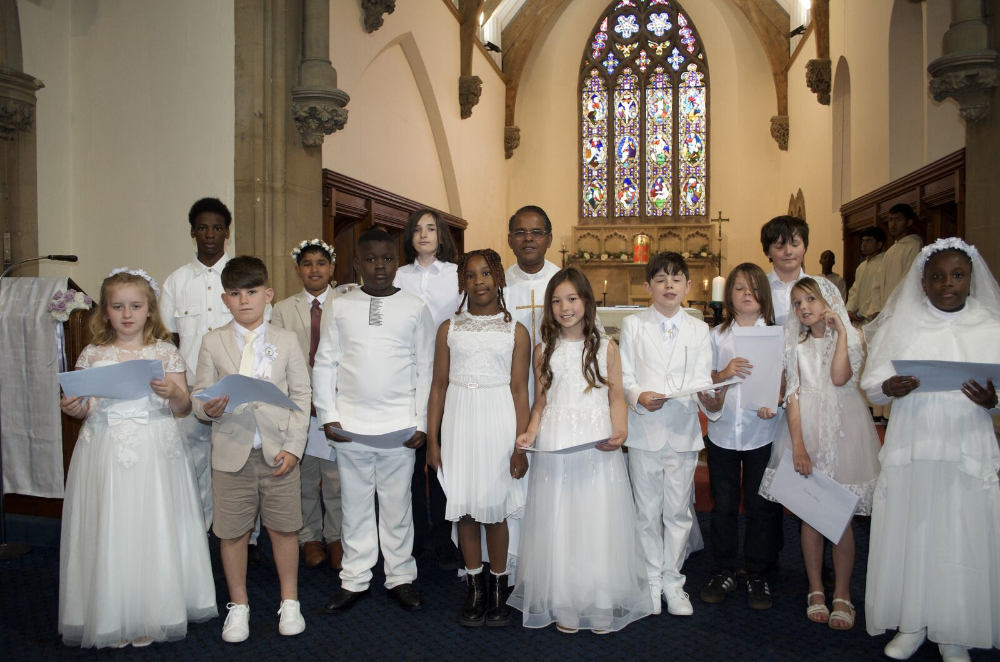
Our Lady & St. James, Bangor
First Holy Communion 2026
Saturday 6 June 2026
On the morning of Corpus Christi weekend, thirteen children came forward to receive the Body of Christ for the first time.
White lilies and roses adorned the sanctuary. Bread, wine, and candlelight — the simple signs of an ancient mystery.

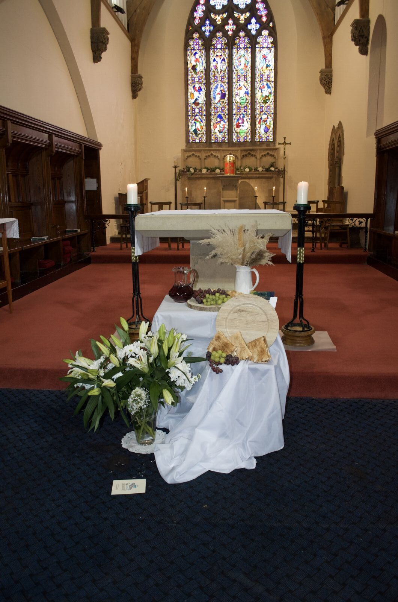
Families filled every pew. Fr. Savi addressed the congregation before the children came forward.

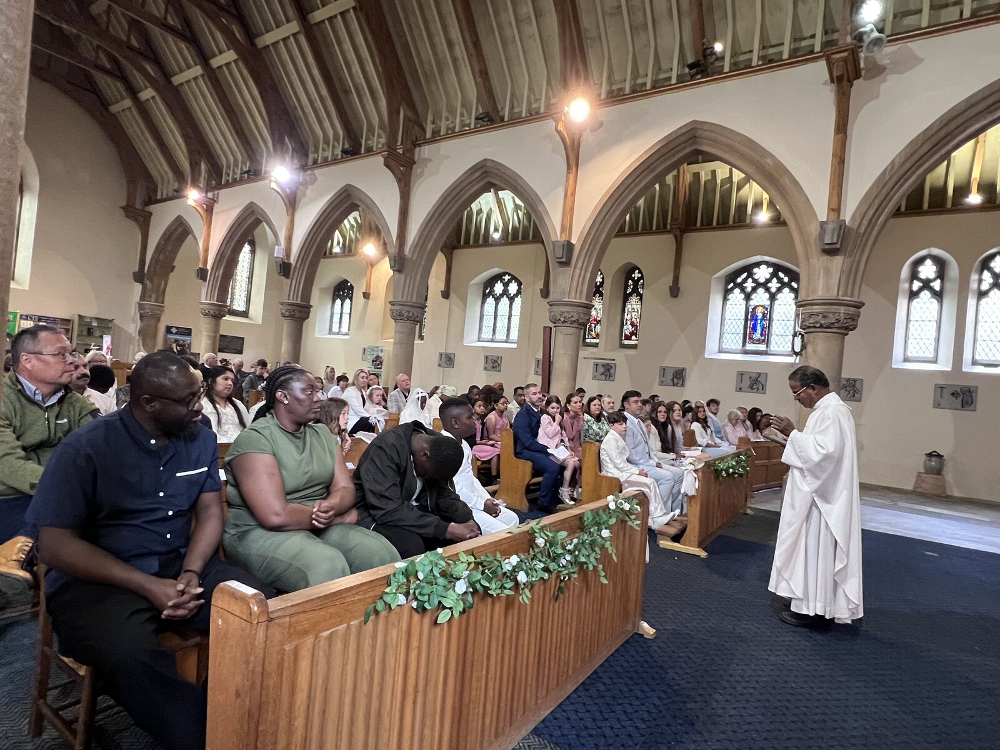

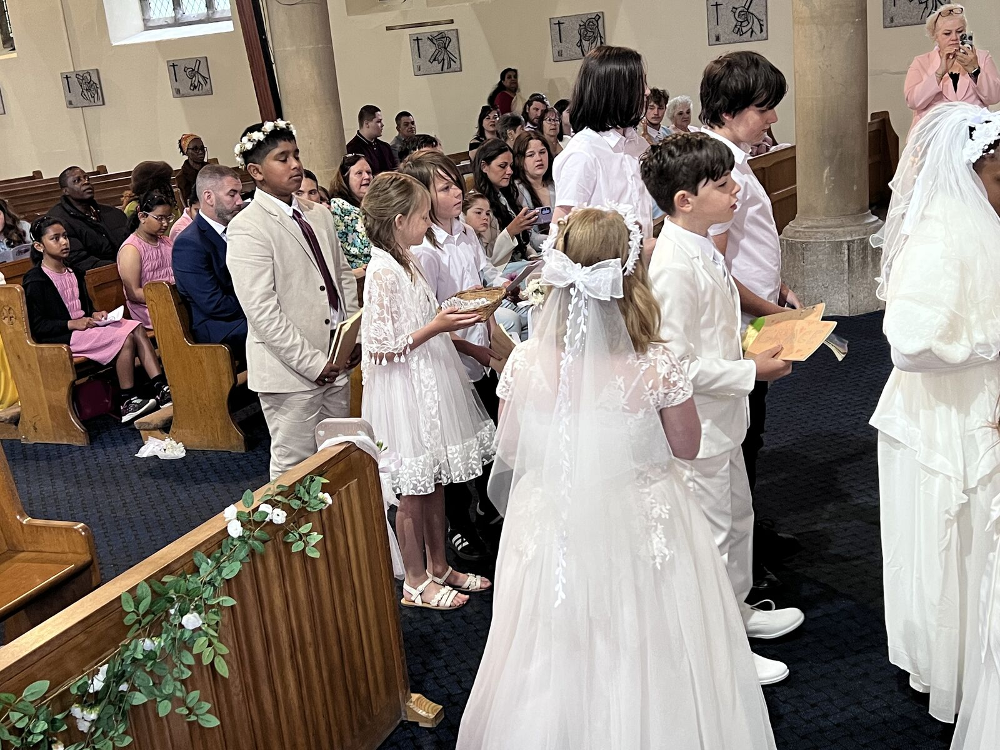
One by one, they came forward. Fr. Savi placed the host in their hands for the very first time.
“I am the bread of life. Whoever comes to me will never go hungry, and whoever believes in me will never be thirsty.”John 6:35

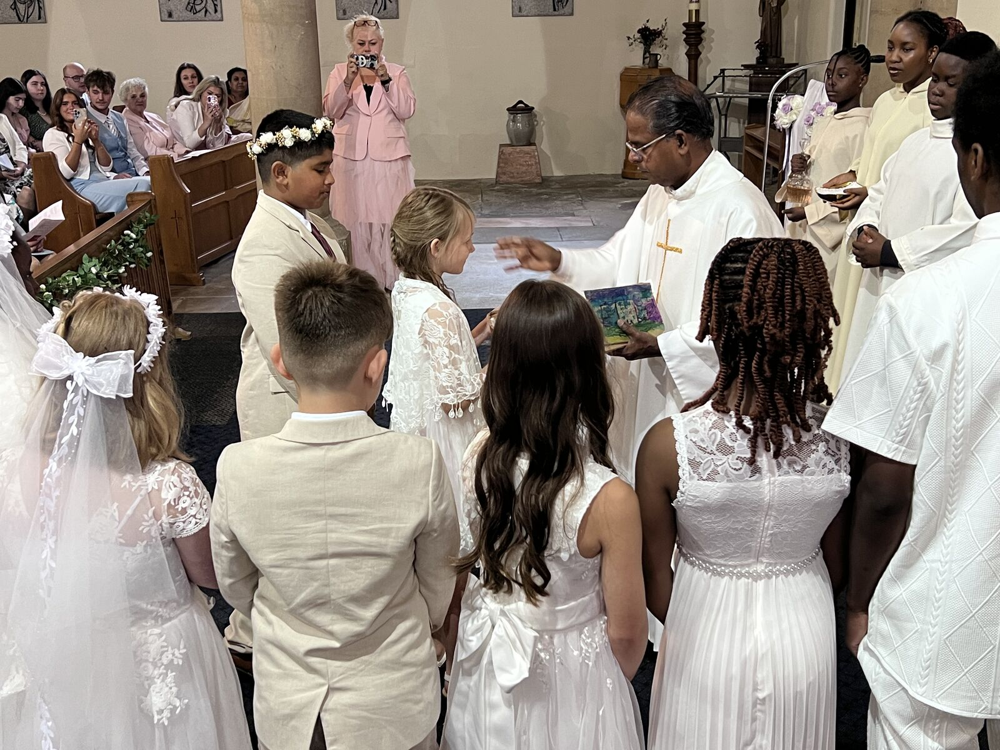
Each family gathered with Fr. Savi after Mass — moments of quiet pride and shared joy.

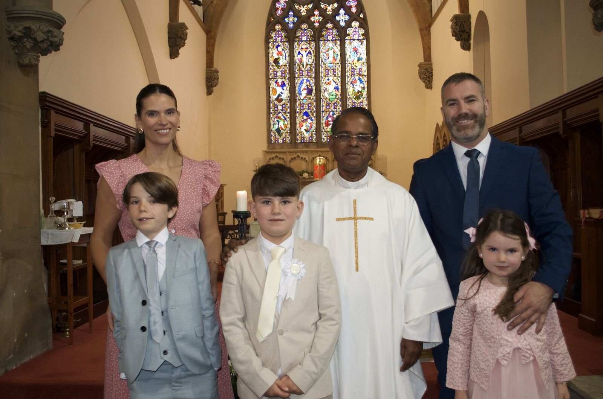

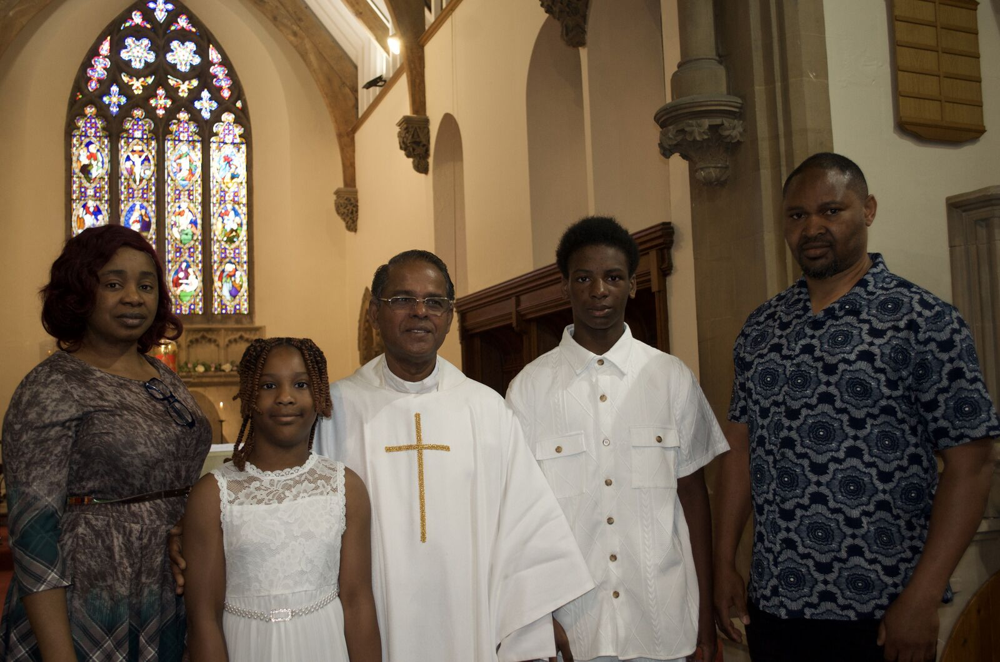

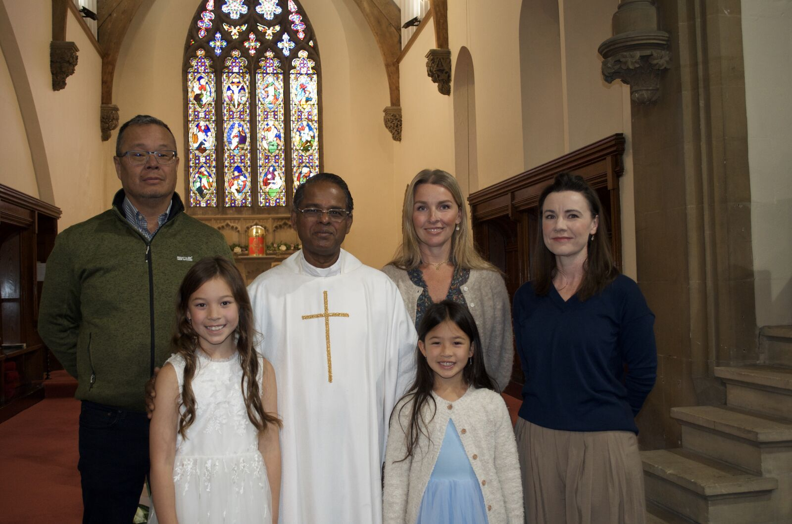

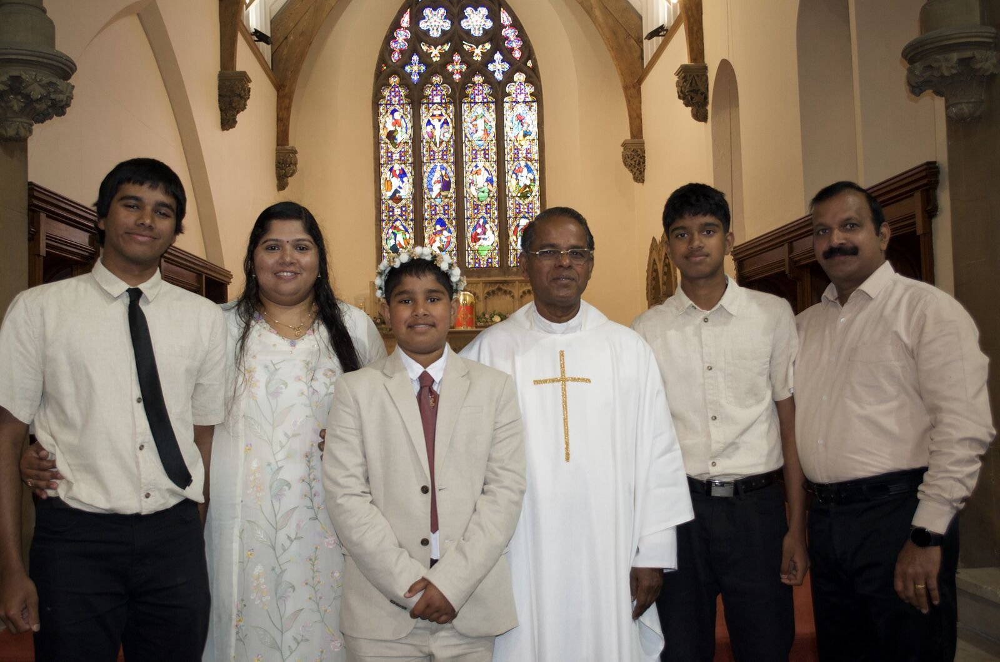

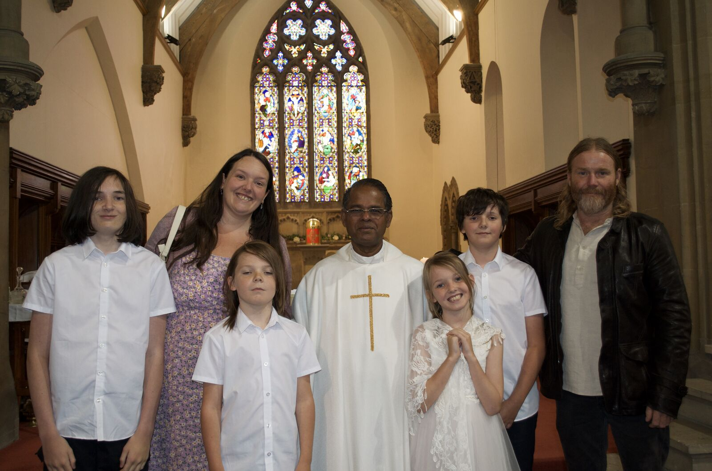

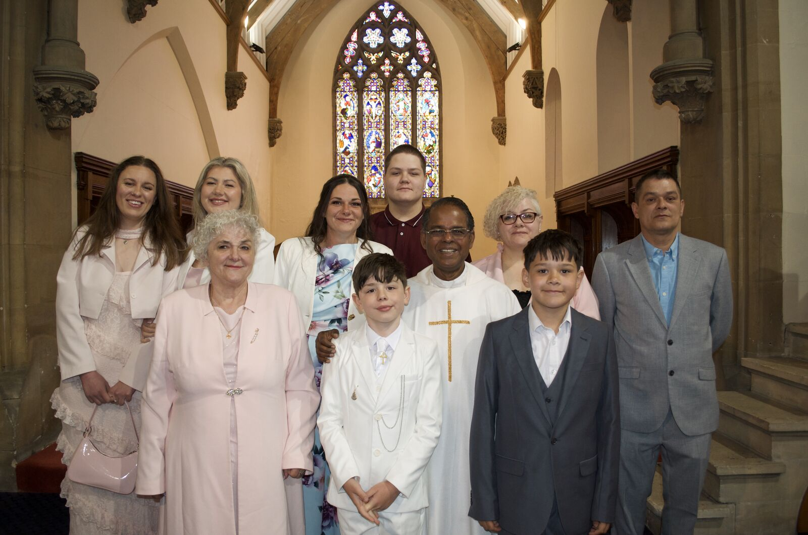
The whole community — children, families, godparents, and parishioners — gathered before the altar. A day to remember.

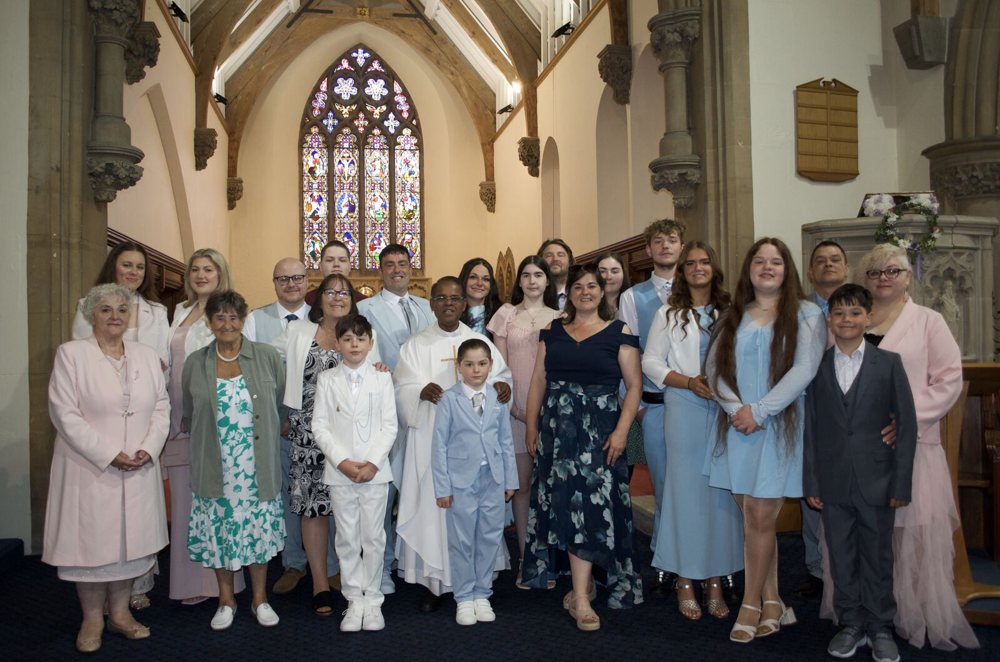
Parish Details
Our Lady & St. James, Bangor · St. David & St. Helen, Caernarfon
For parish enquiries, contact the Parish Office at 01248 370421 or priestbangor@rcdwxm.org.uk.